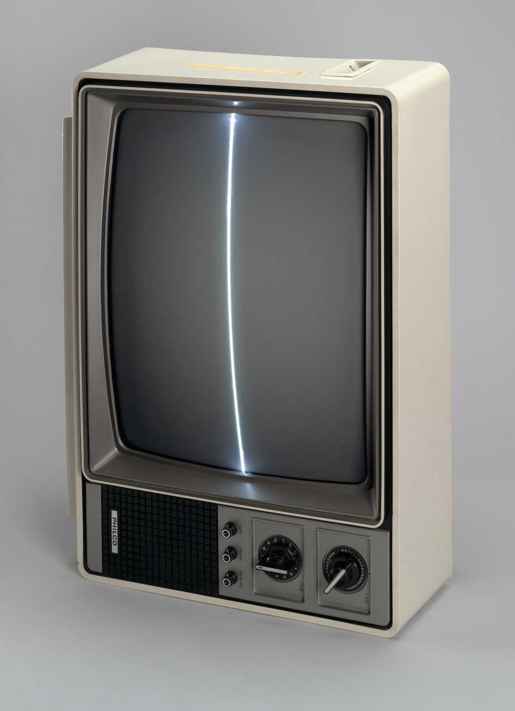

JUNSEOK LEE

PhD student in economics at UC Berkeley | CV
I study spatial economics,
often with ideas from the humanities.

PhD student in economics at UC Berkeley | CV
I study spatial economics,
often with ideas from the humanities.